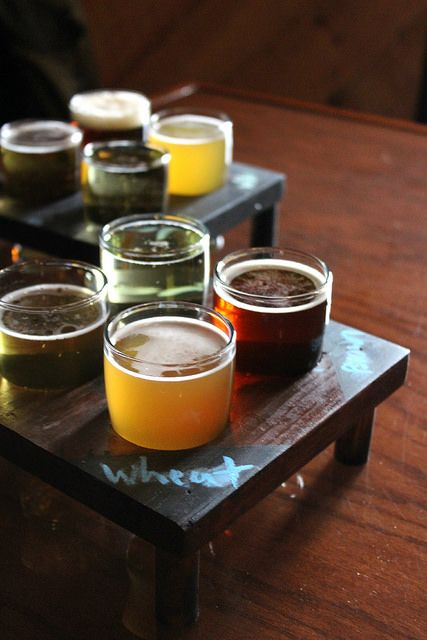

Da sempre la passione per la vendita e il food & beverage mi ha portato a fare della mia attitudine un lavoro.

Arrivare a soddisfare la maggior parte delle esigenze dei clienti, aiutandoli a crescere insieme, confrontandosi e
aggiornandosi settimanalmente, studiando le novità del mercato, il tipo di clientela che può avere l' attività rispetto
alla geolocalizzazione di questa, lo studio del territorio e molte altre cose che consentono di fornire al meglio il potenziale cliente.